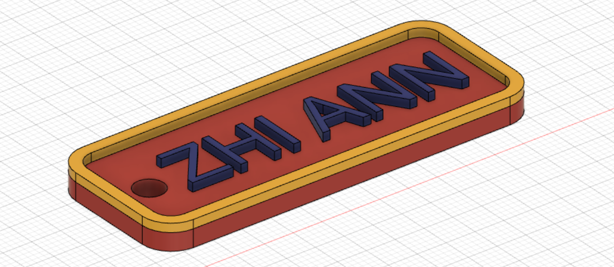

Weekly Documentations
Week 1
In week 1, we first learnt how to create a basic website using html. One cool thing that i learnt was how to change the file extension by going to "file explorer options" and deselect the "Hide extensions for known file type",i find it really cool as i get to know more about different types of file extensions e.g. PNG, JPEG , PDF,MP3,MP4 and how to play around with it. We were also given a rough idea of how programming works where the HTML serves as a base for creating the website, CSS(Cascading Style Sheets) (CSS) for enhancing the appearance of the website, Javascript which makes HTML function better.We were told to watch a video "Learn HTML in 12 Minutes" which will help us create our first website.
Week 2
In week 2,The lecturer told use to watch a video "Learn CSS in 12 Minutes" which will help us design our HTML website better,we were also instructed to create a account on Github so that our website that we created can be uploaded and made public.At first i found github to be confusing as i wasn't familar with the website and do not know how to use it, i also didn't really understand the meaning of repository and other jargons.Hence, i would watch simple videos which explains to me the basics of programme and the meaning of the terms used in programming to get a better sense of idea.This week was pretty chill as well, just getting familar with the softwares and website etc.
Week 3
In week 3, i found myself to be spending alot of time working on CSS and HTML.With the help of the video "Learn CSS in 12 Minutes" i sucessfully linked css to html and uploaded my folders to github and made the website public! As i continued to refine my CSS work, i found that no matter what change i made to a part of my css style sheet, the html just doesn't seem to respond at all, i spent around 3hours typing & watching videos to try to resolve this issue and eventually, i found that it was due to a tiny error where the case letter of my first alphabet was different, which causes the changes made to be unlinked due to case-sensitivity.When i realised it i felt so stupid but i learnt that in coding,eveything that you type meant something, hence it made me more aware of whatever i try to add to my coding.
Week 4
In week 4, i learned how to use 3 softwares: GIMP, Inkscape & Fusion 360.The softwares GIMP & Inkscape is used to edit 2D pictures but they vary based on their graphics. Gimp uses raster images(Pixelated based) which is good for more detailed graphics while Inkscape uses vector images(made up of points, lines, and curves etc) which means that the image remains smooth regardless of me zooming in/out.
Picture left:Original(PNG), Picture right: Edited(SVG)
Software: Inkscape
To convert picture format to SVG on Inkscape, click on "path, select "Trace bitmap" and once you choosed your options, press "ok" and save the new image as a SVG file option. Scalable Vector Graphics (SVG) images are created by parts which is vector based,it has a better resolution than PNG(pixelated), therefore it is more preferred.
I also learnt how to used fusion 360 which is a software to design 3D models to design a keychain. I did so by doing a sketch of the shape and dimensions of the keychain, once i'm done with sketching, i extrude the sketch to make a 3D structure.
Hence, this week i learned how to use these softwares to edit/create 2D images and 3D models by applying the skills of Computer Aided Design (CAD).